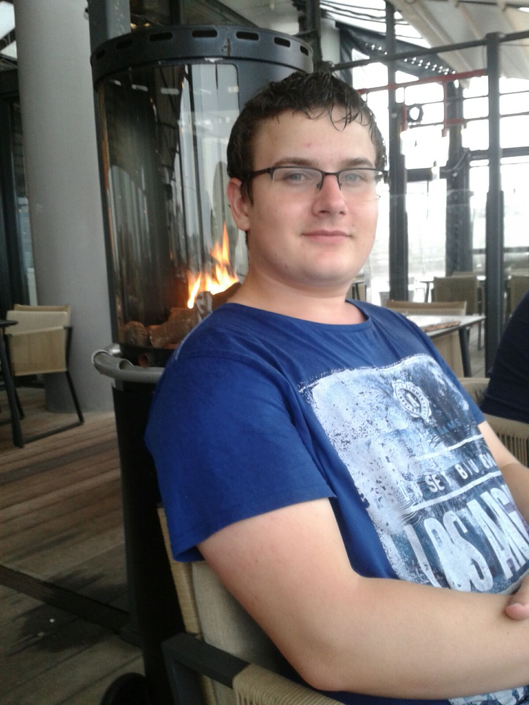

Home
Wie ben ik
Opleidingen
Bijbanen
Hobby's
Home
Wie ben ik
Opleidingen
Bijbanen
Hobby's

Mijn naam is Pieter Huisman geboren te Hardinxveld-Giessendam op 29 november 2000.
Ik heb een oudere broer en zus en 2 katten.
Ik zit op het Davinci college in Gorinchem. Maar daar kunt u meer over lezen in de pagina Opleidingen.
Wat ik wil leren
Op deze opleiding zou ik graag willen leren om zelfstandiger te worden omdat ik meestal meer uit ging van vrienden dan van mezelf.